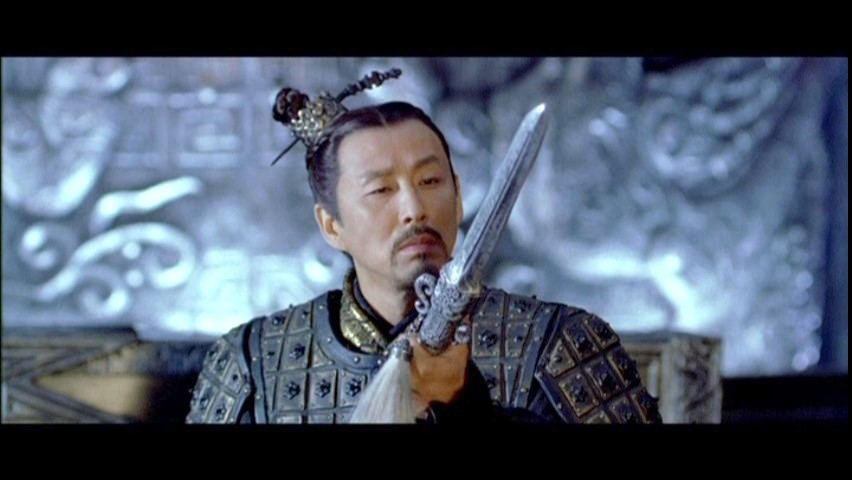

A „névtelen hőst”, egy hivatalnokot (Jet Li) meghívják Csin császár palotájába, hogy elmesélje neki, hogyan ölte meg azt a három, legendás kardforgató bérgyilkost, akik korábban megkísérelték megölni az uralkodót. A „névtelen”t, mielőtt a császár elé járulhatna, meztelenre vetkőztetik és alaposan átvizsgálják, fegyvereit elveszik, majd egy köntöst adnak rá. A császár, miközben hallgatja a történeteket, fokozatosan megjutalmazza a „névtelent”, aki megtiszteltetés gyanánt a kezdeti 100 lépés távolságból 10 lépés távolságra kerül az uralkodótól. A történet elmesélése közben (amiben a császár is aktívan részt vesz a kérdéseivel), ugyanaz a történet többször átalakul. A „névtelen” szerint először az Ég nevű harcost sikerült legyőznie. Majd viszályt szított Szálló Hó és szerelme, Törött Kard között, ezért Szálló Hó megölte Törött Kardot, majd Szálló Hóval maga a „névtelen” végzett egy kardpárbaj során, ami a császár katonái által alkotott körön belül belül zajlott le. A császár azonban rájön, hogy az Ég nevű harcost (akivel korábban ő maga kardpárbajba keveredett a császári palotában) csak azért sikerülhetett legyőzni, mert hagyta magát, vagyis önfeláldozásból halt meg. Ugyancsak így halhatott meg a másik két merénylő is. A magyarázat pedig az lehet, hogy mivel így a „névtelen” jutalomként 10 lépés távolságra kerül az uralkodótól, ő maga akarja megölni a császárt. A „névtelen” nem tagadja a vádat, és elmondja a császárnak, hogy Törött Kard azt kérte tőle, hogy ne ölje meg az uralkodót. Törött Kard ugyanis felismerte, hogy Csin császár, bár véres harcok árán, de egyesíteni akarja a hat, egymással hadban álló kisebb kínai császárságot és egyetlen birodalmat akar létrehozni belőlük. A „névtelen” ezért, bár lehetősége lenne rá, hogy megölje, mert a császár a saját kardját is átadja neki, nem öli meg a császárt, hanem kisétál a palotából. A katonák körbeveszik a „névtelen”t, de engedik a kapuig sétálni. Eközben a császárt megrohanják a tanácsadói, és a „névtelen” megölését követelik tőle, hiszen a törvények szerint a császár merénylőjének meg kell halnia. A császár vonakodva, de engedélyezi a halálos ítéletet, amit ezernyi íjász nyílvesszője hajt végre a kapunál álló, a harcosokkal szembeforduló, „névtelen”en, akinek a császár parancsára hősnek kijáró temetési szertartást mutatnak be.
A film alapjául a Csin Si Huang-ti császárral szembeni i. e. 227-ben, Jing Ke által megkísérelt merénylet szolgált.
 Főoldal